<div class="loading-overlay-container">
    <!-- Logo body stays normal, not masked -->
    

    <!-- Diver + mask -->
    <svg class="mask-wrapper" viewBox="0 590 2048 20000" preserveAspectRatio="xMidYMid meet">
        <defs>
            <!-- Use the mask image -->
            <mask id="diverMask">
                <image href="../resources/loadingOverlay/Mask_rect.svg" 
                       width="100%" height="100%" preserveAspectRatio="xMidYMid meet" />
            </mask>
        </defs>

        <!-- Diver image with mask applied -->
        <g class="diver-wrapper" mask="url(#diverMask)">
            <image class="diver" href="../resources/loadingOverlay/icon_TDC_Logo_Diver.svg" width="100%" height="100%"/>
        </g>

    </svg>
</div>

<style>
:root
{
    --overlay-size: 30vw; /* Size of the loading overlay elements */
}

.loading-overlay-container {
    position: fixed;
    top: 0;
    left: 0;
    width: 100vw;
    height: 100vh;
    background-color: rgba(0, 0, 0, 0.9);
    display: flex;
    justify-content: center;
    align-items: center;
    z-index: 995;
    backdrop-filter: blur(8px);
}

/* Logo stays centered and unaffected */
.logo-body {
    width: var(--overlay-size);
    height: auto;
    object-fit: contain;
    position: absolute;
}

/* Mask wrapper takes same space as logo */
.mask-wrapper {
    position: absolute;
    width: var(--overlay-size);
    height: auto;
}

/* Diver animation */
.diver 
{
    animation: diverMove 2.5s ease-in infinite;
    will-change: transform, opacity;
    transform-box: fill-box;
    transform-origin: center;
}

@keyframes diverMove {
    0% {
        transform: translateY(-50%);
    }
    100% {
        transform: translateY(30%);
    }
}

</style>
